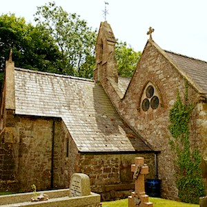
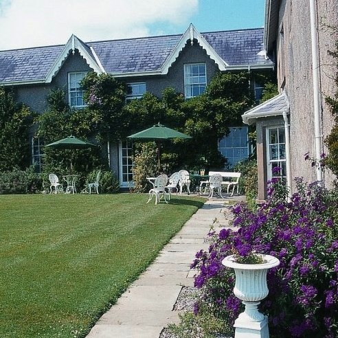

Kate is a fiery celt. She loves her homeland of Wales, she loves London and her new home in Luxembourg. She is a little bit geeky.
Patrick is a laid back Luxembourger. He also loves his homeland and London life and walking the Welsh Costline. He is very geeky.
They met at university more than 10 years ago. Patrick was always late for lectures, Kate was always early for lectures. This pattern continued even when they were dating. They fell in love during a trip to Thorpe Park. In their household being a geek is a badge of honour. They have a wonderful son, who makes them laugh all the time.
Venues
The wedding will take place on the lovely Gower Peninsula, Wales, UK.
Ceremony
11:00
Penmaen Church, Gower
A wedding service will be held at Penmaen Church on the Gower. All invitees, young and old are welcome, though space is limited.
Reception
from 12:00
Penmaen House, Gower
The wedding breakfast, afternoon drinks & games, and evening party will take place in the grounds of the house, overlooking the wonderful Welsh Coastline. Parking available.
Travel
How to get the Gower
There are lots of different travel options, here are just a few....
Fly Drive
1) Fly to London Heathrow with British Airways 2) Hire car and drive (depending on when you land this could take anywhere between 3 and 5 hours). Near Heathrow is the M4 motorway which is a long road that connects London and Swansea, so basically you keep driving until you reach nearly the end of the motorway. We would avoid driving between 4 and 7 pm in the evening you will hit commuters driving home from the big cities of London and Bristol on the roads and if there is an accident, chaos ensues. Google says this drive should take 3 hours and 4 minutes!
Fly & ( Train or Bus ) & Taxi
1) Fly to London Heathrow with British Airways 2) Take train from London Heathrow to London Paddington Train station – Note there is a local service that takes about 10 minutes more than the Heathrow express but is half the price. 3) Take Train from London Paddington to Swansea (journey is about 3 hours) 4) take Taxi to location where you are staying (personally I would avoid staying in Swansea city itself, it is less beuatiful than the Gower but that is a personal preference). If you stay on the Mumbles you may not need a car but if you stay anywhere on the Gower Peninsula public transport is a bit like the bus services available if you live in Tandel :-) 4) If you don’t want to take a train you could take the National Express Bus , which you can pick up at Heathrow Airport, it goes directly to Swansea without the need to change. It takes around 4 hours but you don’t have to travel into London and wait for a train.
Drive
Have an adventure and drive from Luxembourg. You can take Euro Tunnel or the Cross Channel Ferry We are going to do this! We did this in the summer and had a lovely time. Travelling with Luc we broke up the Journey staying near Dover and near Windsor and not driving for more than 3 hours a day. If you are travelling without a child you could probably drive it in one day. Google says this will take around 9 hours and 14 minutes! Note: You have to pay to enter Wales if you drive over the Severn Bridge, you don't pay when you leave Wales!
Fly and Drive
1) Fly from Luxembourg to Cardiff via Amsterdam, with the KLM city hopper 2) Hire a car and drive to Swansea. Google says it takes 1 hour and 20 minutes to drive! . Note: There is are three flights from Amsterdam to Cardiff a day, 2 of the flights are early morning and early evening - not great if you are travelling with a child. There looks to be one flight around the middle of the day. You could also fly to Bristol via Amsterdam and pick up a hire car there - it is a little bit further from Swansea. I might try this option soon, so will let you know if it is any good.
Where to stay
Hotels, Bed & Breakfast, Camping and Cottages for rent, there are lots of options for your stay close to the wedding.
Check out TripAdvisor for reviews of Hotels, B&Bs', and holiday rentals in the Gower and Swansea area.
Gower Getaways lists holiday rentals (flats, cottages, larger houses) for rent in the Gower Peninsula.
R.S.V.P.
We look forward to celebrating with you.
Please reply by end of April, 2014, by email to petzimilian@googlemail.com